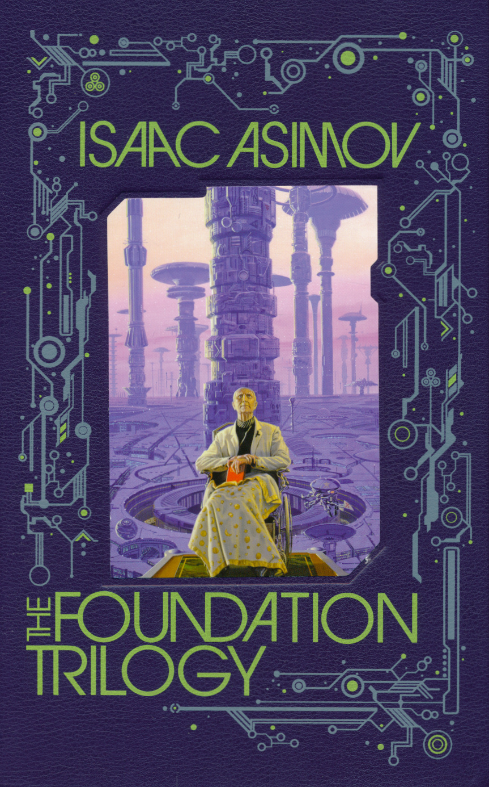

Dune
Author:
Isaac Asimov
Year read:
2022
Month read:
February
Recommended by:
Sid having a role
Genre:
Scifi
Book description:
For twelve thousand years the Galactic Empire has ruled supreme. Now it is dying. But only Hari Seldon, creator of the revolutionary science of psychohistory, can see into the future--to a dark age of ignorance, barbarism, and warfare that will last thirty thousand years. To preserve knowledge and save humankind, Seldon gathers the best minds in the Empire--both scientists and scholars--and brings them to a bleak planet at the edge of the galaxy to serve as a beacon of hope for future generations. He calls his sanctuary the Foundation.
Club thoughts:
None, we have not read it yet :/